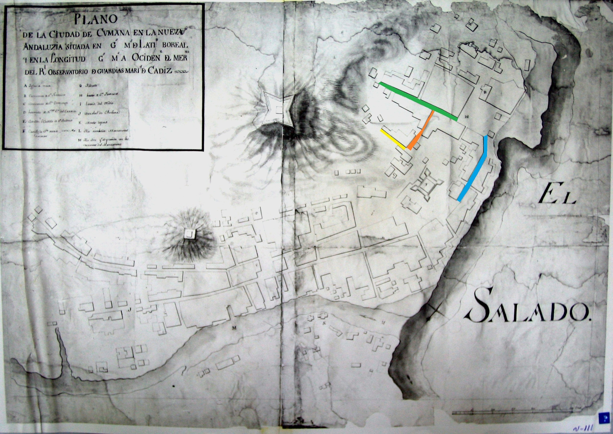

Rommel J. Contreras G. /Alexander R. Castro M., rjcg (Editor)
Sección3.4El plano de los Guardias Marinas.
Los más antiguos y finos detalles de los alrededores del castillo o fuerte de Santa María de la Cabeza, están indicados en un plano de autor desconocido, «Plano de la ciudad de Cumaná en la Nueva Andaluzía» [BNV, álbum V5, foto 111]. Por estar referenciado al meridiano del Real Observatorio de Cádiz, se elaboró posterior a 1753 (indicado: +1753) 1 .
(a)
(b)
Figura3.4.1.- a) El plano de la «Ciudad de Cumaná en la Nueva Andaluzia ...»; [BNV, álbum V5, foto 111]. Posiblemente realizado por los Guardias Marinas que vinieron en la Expedición de Límites 1745. b) Detalle del Plano: Muestra los inmuebles, traza de las calles y la Plaza de Armas en los alrededores de Fuerte de Santa María, cerro Quetepe y barrio San Francisco. La casa donde se alojó el José de Iturriaga, esta resaltada en amarillo (Contreras, R.).
En el plano de los Guardias Marinas (alias sugerido) 2 , se detalla las trazas de las calles de la Cumaná de mediados del siglo XVIII. En el barrio San Francisco, son notables las insipientes estructuras de las construcciones que se consolidan en el cerro Quetepe y aledaños de la Plaza de Armas del fuerte de Santa María de la Cabeza. Es uno de los más importantes referentes cartográfico respecto al retorno del río Cumaná al cauce del siglo XVI, luego del forzado cauce de barlovento [4].
Entre otros, es relevante el trazado detallado del inmueble que ocupó el Capitán de Navíos Jose de Iturriaga en 1754; resaltado amarillo de la Figura 3.3.1. Más que otros, el plano de los Guardias Marinas, permite reconstruir el tramado urbano en los alrededores del noble sitio objeto de esta investigación.
Este plano, cuya copia fotográfica puede consultarse en la sección de Medios Planos de las Biblioteca Nacional, tuvo que ser levantado posterior a la fecha de creación del Real Observatorio de Cádiz; el cual se construyó anexo a la Academia de Guardias Marinas. El Observatorio fue creado por propuesta del marino y científico Jorge Juan en 1753. Posiblemente el plano [BNV, álbum V5, foto 111] fue elaborado por los Guardias Marinas de la Expedición de Límites de 1754; ya que presenta similitudes respecto a los detalles y a las técnicas empleadas para la elaboración del plano [MN, Signatura: 30-A-7]. Pero desde el punto de vista cartográfico no están lejanos en su elaboración, ni espacial, ni temporalmente.
“… a Don Ignacio Milhau, el cual fue elegido para Geógrafo de esta expedición en el estado de Guardia Marina, …. a los Guardias Marinas Don Vicente Doz y Don Nicolás Guerrero, que fueron sin ascenso a trabajar con Don José Solano y se han aplicado tanto que pueden servir de Geógrafos”[2]